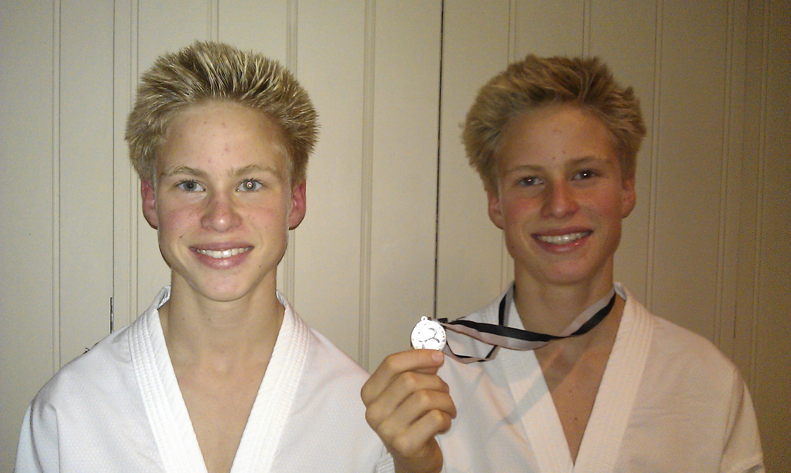

Innlegg
Medalje i nasjonalt stevne

To utøvere fra Ringerike TKD-klubb konkurrert i kamp i Tranbyhallen på nasjonalt stevne i helgen. Det resulterte i en sølv-medalje og en fjerdeplass på henholdsvis Aleksander og Kristoffer Kvannli. Gutta gikk i -55 klassen og det var sju utøvere med i deres klasse, vi gratulerer!